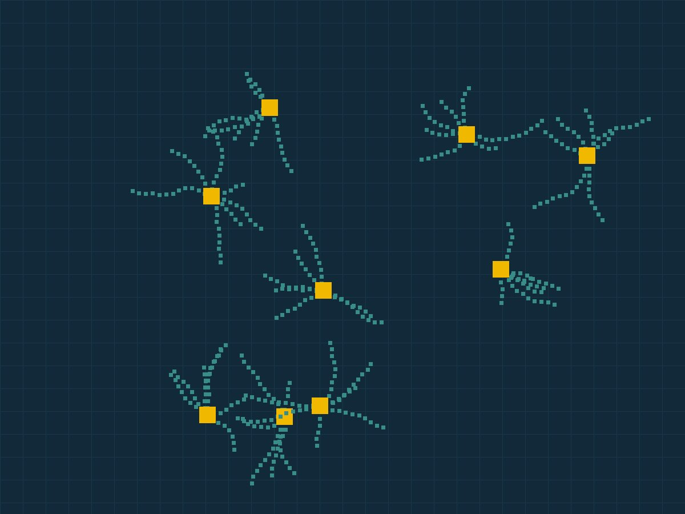
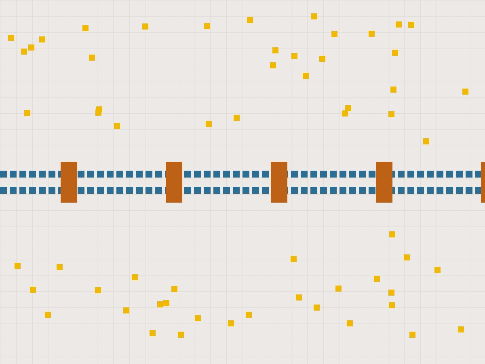
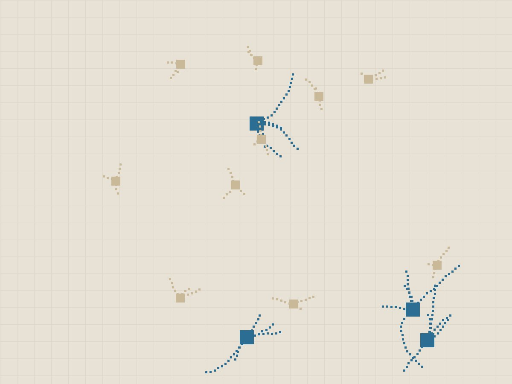

Translational Neurobiology Lab
We study human stem-cell-derived models of neurodegenerative disease, the role of zinc signaling, and the biology of neuronal resilience.



Latest news
- [Date] [Headline] — more
Funding
- Marie Skłodowska-Curie Actions (MSCA) Global Fellowship
- PRIN PNRR
Collaborators
- [Name], [Institution]
- [Name], [Institution]